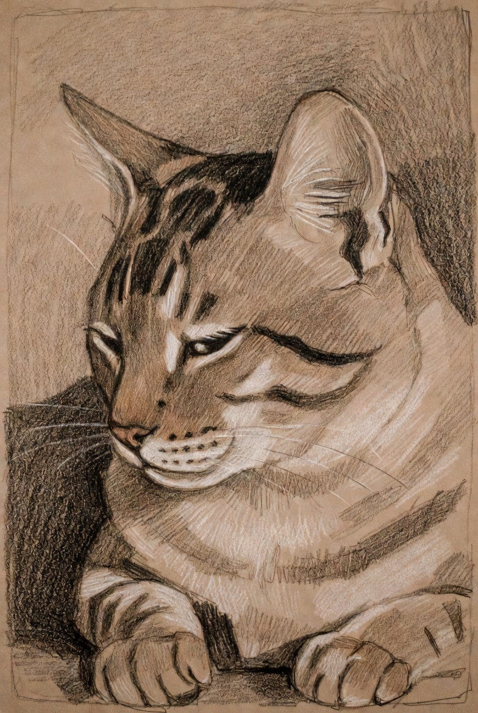

Детальная проработка портрета животного с использованием техники штриховки и растушевки. Основная задача — передать фактуру шерсти, объем и выразительный взгляд.
Готов выполнить аналогичные работы по фото заказчика: портреты питомцев, иллюстрации для книг, скетчи.